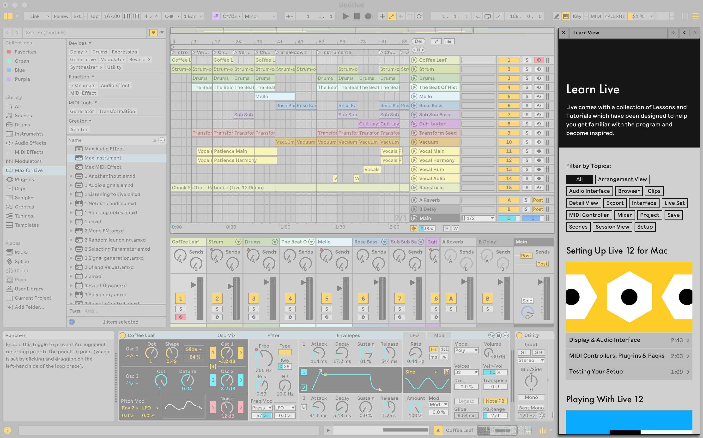
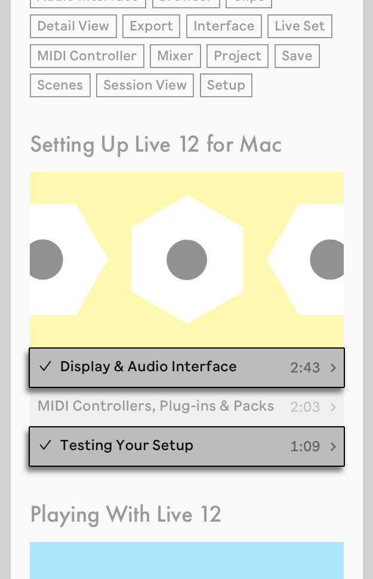
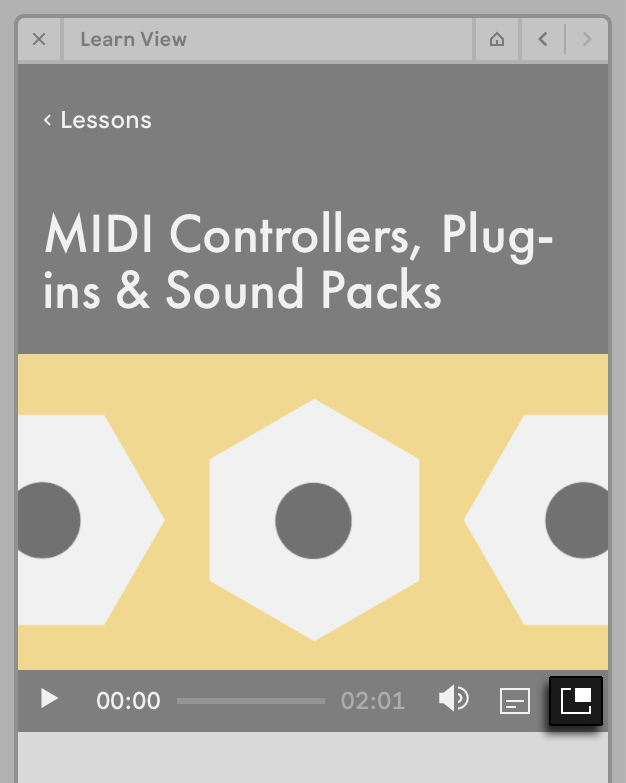
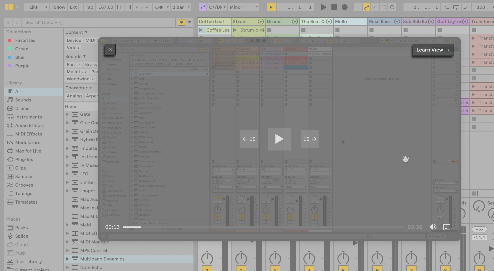
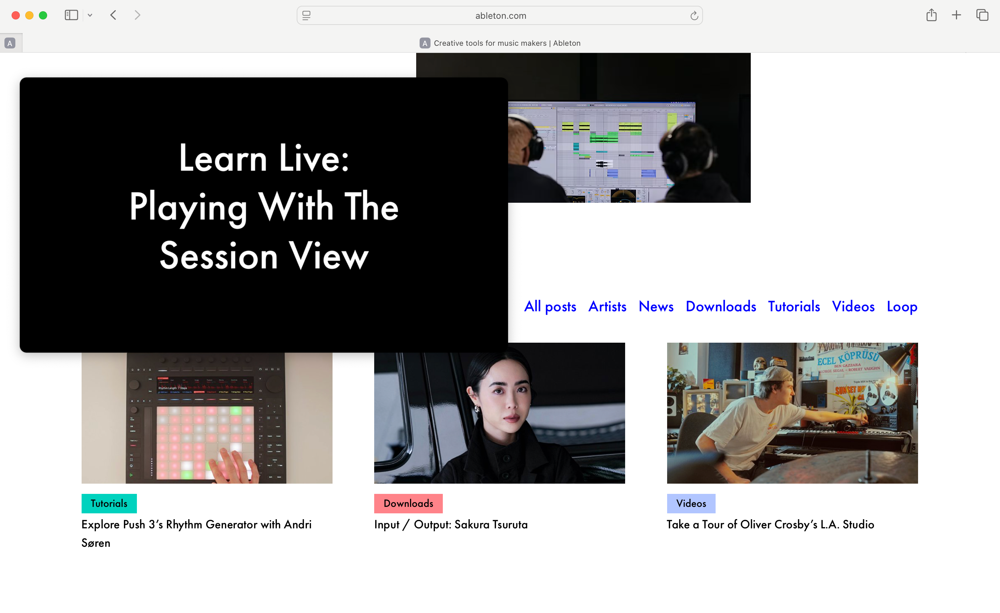
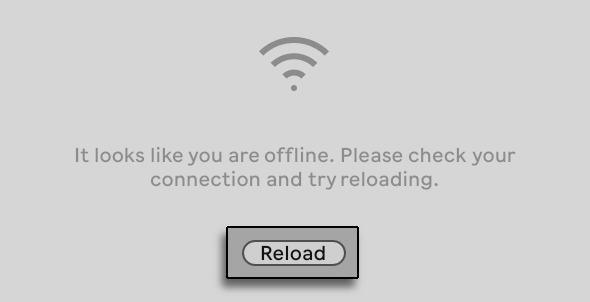
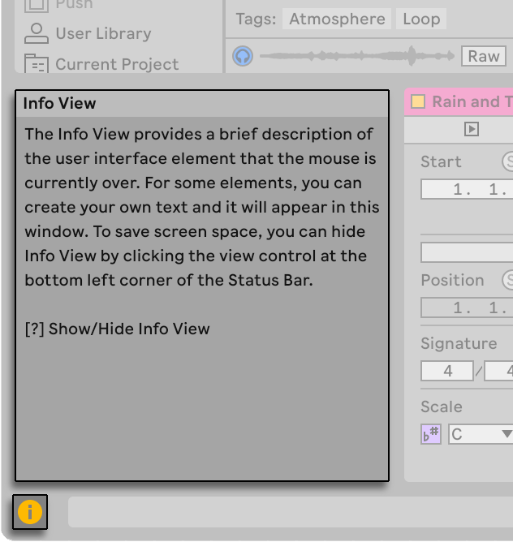
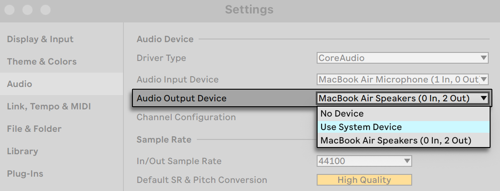

2. First Steps
2.1 Installation and Authorization
Before getting started with Live, make sure you have the latest version of the software installed and authorized. You can download the Live installer from your ableton.com User Account and then launch it to install the software. Once installed, you can authorize Live. Note that each Live license comes with two authorizations, so you can use the software on up to two computers, providing that you only use one computer at a time.
2.2 Learning About Live
There are different options available within Live and externally to help you get familiar with the application and music making in general.
Live includes two built-in learning tools: the Learn View for guided lessons, and the Info View for context-sensitive help. For further exploration, there are resources available outside of the application. These include this manual, videos, and interactive web apps.
2.2.1 Learn View
Live’s Learn View includes structured learning modules that combine video content with written explanations and guide you through Live’s interface and key features step by step. New modules will continue to be released over time and can be added to the Learn View at any point, so you don’t have to wait for a Live update to access new content. At the bottom of Learn View’s home page, you can find links to this manual and the Knowledge Base.

The Learn View is displayed by default when you first open Live, but you can close it with the X button located in the upper left corner of the view and reopen it via the Help menu or with the CtrlAlt7 (Win) / CmdOption7 (Mac) keyboard shortcut. Unless you close Live in the meantime, the Learn View will return to the last visited page next time you open the view, so you can jump back into a lesson at any time.
Each of the Learn View’s learning modules contains a set of interactive lessons. You can filter lessons by topic and mark them as completed to track your progress.
An individual lesson contains a video walkthrough, a brief text explaining the key concepts covered by the lesson, and links to other lessons at the bottom (available only when the home page is set to show all lessons). You can exit a lesson and return to Learn View’s home page by pressing the Learn View Home Page button in the upper right corner of the view or by pressing < Lessons at the top of the lesson.
You can use the Complete Lesson button at the bottom of a lesson to mark it as completed. Completed lessons are indicated with a check mark symbol on the home page.

To watch the video contained within a lesson, use the controls at the bottom of the video player. You can play or pause the video with the leftmost button, scrub through the video via the progress bar, adjust the video’s volume, turn on subtitles, or open the video in a picture-in-picture window. Note that all of the lesson videos are also accessible via the Learn View playlist on YouTube.
Opening a video in the picture-in-picture window allows you to resize the video and freely move it around the screen, which means you can more easily follow the steps in the lesson as the video plays. To open a video in the picture-in-picture window, press the button to the right of the video progress bar at the bottom. Note that this also automatically closes the Learn View.

In the picture-in-picture window, you can scrub through the video via the progress bar or by pressing the ← 15 or 15 → buttons. The progress bar and the buttons appear when you hover over the video with the mouse. As long as Live remains open, the video will resume where you left off when you come back to a lesson, even if you close the Learn View or picture-in-picture window while the video is still playing.
To close the picture-in-picture window, hover over it and then press the X button in the upper left corner. Alternatively, press the Learn View → button, which will reopen the Learn View.

Note that the picture-in-picture window always remains on top of any application window, even if you switch from Live to a different application. If you press the Learn View → button within the picture-in-picture window while the window is on top of another application, Live will be brought into focus, the Learn View will reopen, and the picture-in-picture window will close.

You need to be connected to the Internet in order to use the Learn View. If you lose network connectivity and then reconnect, press the Reload button to refresh the view.

2.2.2 Info View
The Info View displays the name and function of whatever element of the UI that you hover over with the mouse.
You can show or hide the Info View by using the view control toggle in the bottom left corner of Live’s window or by using the ? key.

You can also create your own text notes for tracks, clips, devices and more, by selecting “Edit Info Text” in the context menu for the corresponding item. You can then type text into the Info View, which will be saved and displayed in your Live Set.
2.2.3 Other Learning Resources
While we encourage you to familiarize yourself with all of the content in the manual, we especially recommend reading the Live Concepts chapter, which encapsulates everything that Live is and can do. The remaining chapters serve as a more in-depth reference for the material introduced in Live Concepts.
If you are interested in hearing other musicians talk about their workflows and Live setups, or in learning about other Ableton products, check out the official Ableton YouTube channel.
Ableton also offers two websites, Learning Music and Learning Synths, which cover the basics of music making and using synthesizers respectively. Each site contains a series of interactive steps that gradually take you through different concepts while allowing you to instantly try out the things you have learned. No prior experience or equipment is needed; you can interact with the content directly in your browser.
2.3 Live’s Settings
The Settings window is where you can customize various settings for Live. Settings can be found in the Options menu on Windows and in the Live menu on macOS. You can also open the Settings window using the shortcut Ctrl, (Win) / Cmd, (Mac).
Live’s Settings are distributed over several tabs, which are described below.
2.3.1 Display & Input
The Display & Input Settings contain options for language and zoom settings, as well as keyboard navigation and other application settings.
- The Display section lets you select your preferred language for Live’s UI, as well as set the zoom amount for Live’s main window (as well a second window, if open).
- In Display Options, you can enable “Outline View in Focus” so that a border is drawn around whatever view is currently selected. You can also choose how scroll bars are displayed, set the Follow behavior for Arrangement View and clips, and show or hide user interface labels.
- You can enable various keyboard workflow options in the Navigation and Keyboard section, such as using the Tab key to move keyboard focus, having the Tab key navigate in a section continuously, and using the arrow keys to move clips.
- Mouse and Pen Input lets you enable Pen Tablet Mode, as well as permanent scrub areas.
- You can restore any “Don’t Show Again” warning dialogs that you previously switched off in the Application Options section.
2.3.2 Theme & Colors
In the Theme & Color Settings, you can determine the overall look of Live’s appearance.
- You can choose a color scheme from the Theme section, or have Live follow the light/dark mode settings from your OS. You can also set a warm, cool, or neutral tone to the color palette, and enable high contrast if needed.
- The Customization tab lets you determine the opacity of the grid lines in the UI, adjust the brightness level, and set the color intensity and hue.
- You can switch auto-assigning track colors on or off in the Track and Clip Colors section, or choose a default color for all tracks. The Clip Color toggle can be set to generate random colors or use the track’s color for new clips.
2.3.3 Audio
The Audio Settings options can be used to set up Live’s audio connections with the outside world via an audio interface. This includes access to individual input/output devices, sample rate and latency settings, and a testing section for audio interface calibration.
On macOS, you can use the Use System Device option in the audio output chooser to have the output device in Live match what is selected in the macOS Sound System Settings. This way, you can automatically use the same device for both Live and your operating system.

2.3.4 Link
The Link Settings can be used to configure Link and Link Audio. Link synchronizes devices in time over a local network, while Link Audio streams audio between compatible devices over the network, without additional hardware or manual latency compensation.
To find out more about using Link, check out the dedicated section in the Synchronizing with Link, Tempo Follower, and MIDI chapter. To learn about Link Audio, check out the Using Link Audio section in the same chapter.
2.3.5 Tempo & MIDI
The Tempo & MIDI Settings are used to help Live recognize external devices for three separate and distinct purposes:
- Syncing the program with external devices via Tempo Follower or MIDI. Please see the Synchronizing via Tempo Follower and Synchronizing via MIDI sections for more details.
- Playing MIDI notes. To learn how to route an external device into Live for MIDI input, or how to send MIDI to an external device, please see the Routing and I/O chapter.
- Controlling parts of the interface remotely. This subject is covered in detail in the MIDI and Key Remote Control chapter.
2.3.6 File & Folder
The File & Folder Settings are used to configure settings related to data handling, custom Max for Live paths, and Live’s decoding cache.
2.3.7 Library
The Library Settings allow you to specify a default location for various types of installed files, including Packs and your User Library, as well as whether dependent files (such as samples) are copied when moving clips, tracks, or presets to the browser. You can also choose to show or hide the Cloud, Push, and Splice labels in Live’s Places.
2.3.8 Plug-Ins
The Plug-Ins Settings allow you to set the location of plug-in folders, specify which folders you want Live to use, and modify the display behavior of plug-in windows.
2.3.9 Record, Warp & Launch
The Record, Warp & Launch Settings allow customizing the default state for new Live Sets and their components, as well as selecting options for new recordings.
2.3.10 Licenses & Updates
The Licenses & Updates Settings are used to manage authorization, automatic updates, and usage data.